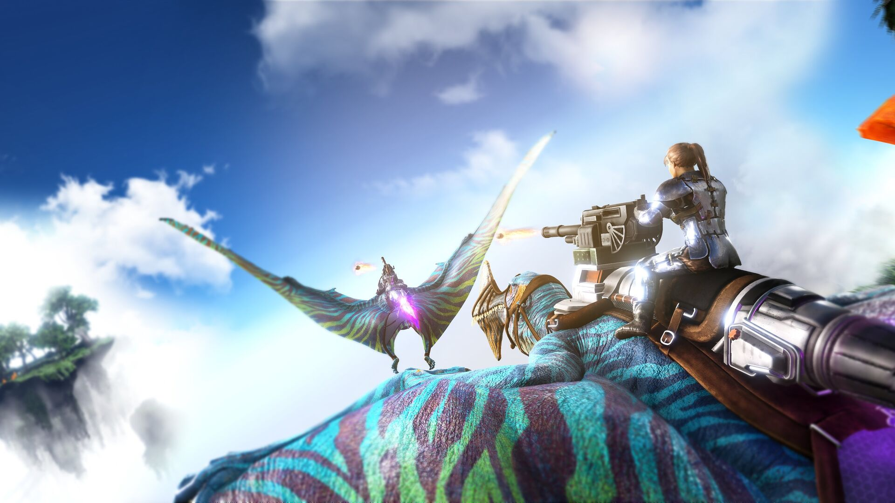
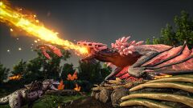

Crystal Isles
Crystal Isles — одна из самых живописных карт для ARK: Survival Evolved, которая предлагает игрокам удивительные пейзажи, уникальных существ и новые вызовы.
Основные биомы

Белые мели: пляжный биом с прозрачной водой и кораллами.

Радужные кристаллы: биом, наполненный разноцветными кристаллами.
Ресурсы карты
На Crystal Isles игроки могут найти:
- Кристаллы: для оптических приборов и высокотехнологичного оборудования.
- Элементы: для создания продвинутой техники.
- Металл: для оружия, инструментов и строительных блоков.
Уникальные существа
- Кристальный виверн: редкий вид драконов, доступный только на Crystal Isles.
- Тропический виверн: дракон с ускорением в полёте.
- Кровавый виверн: самый опасный вид с кровавым уроном.